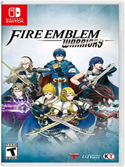
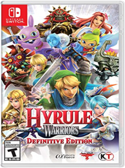
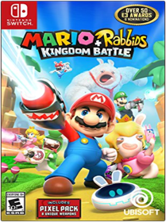
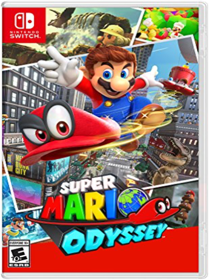

Batman: The Telltale Series Season 1
Warner Home Video - GamesB074JP6F39Enter the fractured psyche of Bruce Wayne in this dark and violent new story from the award-winning creators of The Walking Dead – A Telltale Games Series, and discover the powerful and far-reaching consequences of your choices as the Dark Knight. As Batman, you’ll encounter classic allies and adversaries, and as Bruce, you’ll learn the true meaning of what it means to be the man behind the cowl. Batman – The Telltale Series comes to retail on Nintendo Switch and includes all five episodes of the first season.
Fire Emblem Warriors
NintendoB071X7QQKZClash with legions of soldiers and Fierce monsters as Marth, Xander, Corrin, and other Fire Emblem heroes unleashing over-the-top-powerful Dynasty Warriors-style moves. Take direct control of known and original Fire Emblem characters, issue them strategic commands in the midst of battle, pair up heroes to unleash stunning attacks, and more. Unlock new playable heroes, each with their own unique moves, special attacks, weapon types, and voiced dialogue in this large-scale action game from the Hyrule Warriors team.
Hyrule Warriors: Definitive Edition
NintendoB078Y3HVK8Cut down enemy hordes as Legend of Zelda characters—in full 1080p TV mode—or in two-player mode on one system! Link and Zelda can battle in costumes from the Legend of Zelda: Breath of the Wild game, while Tetra and King Daphnes appear in scenes based on the Legend of Zelda: The Wind Waker game. Find and care for fairies who will aid you in battle!
The Legend of Zelda: Breath of the Wild
NintendoB01MS6MO77Step into a world of discovery, exploration, and adventure in The Legend of Zelda: Breath of the Wild, a boundary-breaking new game in the acclaimed series. Travel across vast fields, through forests, and to mountain peaks as you discover what has become of the kingdom of Hyrule in this stunning Open-Air Adventure. Now on the Nintendo Switch console, your journey is freer and more open than ever. Take your system anywhere, and adventure as Link any way you like.Discover a world as never before seen: by making your own path, choices, and consequencesIngenuity is the key to survival: find multiple solutions to tons of dynamic puzzlesSurprises hide around every corner: scavenge weapons, armor, plants, animals, and moreLive off the land: find weapons and armor, cook food, and brew elixirsUtilize special technology: the in-game Sheikah Slate controls objects and enemies in fun waysGear up: many weapons and armor have unique stats, resistances, effects, and durabilityShrines offer hundreds of clever challenges even veterans won’t see comingCompatible amiibo include the Wolf Link amiibo figure, figures from the Legend of Zelda 30th Anniversary amiibo series, and figures from The Legend of Zelda: Breath of the Wild amiibo series. Each one will offer Link in-game items that may just come in handy.
Lego City Undercover
Warner Home Video - GamesB01MS6KPOHJoin the Chase! In LEGO CITY Undercover, play as Chase McCain, a police officer who's been tasked with going undercover to hunt down the notorious - and recently escaped - criminal Rex Fury and putting an end to his city-wide crime wave. With two player co-op, friends can explore the sprawling open-world metropolis that is LEGO City, with more than 20 unique districts to investigate, car thieves to bust, hilarious movie references to discover, vehicles to drive, and hundreds of collectibles. LEGO CITY Undercover brings together witty, original storytelling with signature LEGO humor to create a fun-filled experience for players of all ages to enjoy.
Lego Worlds
Warner Home Video - GamesB073FPHJ6DEXPLORE. DISCOVER. CREATE. TOGETHER. LEGO Worlds is an open environment of procedurally-generated Worlds made entirely of LEGO bricks which you can freely manipulate and dynamically populate with LEGO models. Create anything you can imagine one brick at a time, or use large-scale landscaping tools to create vast mountain ranges and dot your world with tropical islands. Drop in prefabricated structures to build and customize any world to your liking. Explore using helicopters, dragons, motorbikes or even gorillas and unlock treasures that enhance your gameplay. Watch your creations come to life through characters and creatures that interact with you and each other in unexpected ways. In LEGO Worlds, anything is possible!
Mario + Rabbids Kingdom Battle
UBI SoftB071JRMKBHTwo worlds collide in Mario + Rabbids Kingdom Battle!The Mushroom Kingdom has been torn apart by a mysterious vortex, transporting the chaotic Rabbids into this once-peaceful land. To restore order, Mario, Luigi, Princess Peach, and Yoshi must team up with a whole new crew: four Rabbids heroes! Together, they will battle with weapons through four worlds filled with combat, puzzles, and unpredictable enemies.
Developed exclusively for the Nintendo Switch system, Mario + Rabbids Kingdom Battle is the best of the Mario and Rabbids franchises, combining all that you love about Mario’s iconic universe with the side-splitting antics of the Rabbids.

Mario Kart 8 Deluxe
B01MYBZ4A9Nintendo Switch Software Mario Kart 8 Deluxe. Hit the road with the definitive version of Mario Kart 8 and play anytime, anywhere! Race your friends or battle them in a revised battle mode on new and returning battle courses. Play locally in up to 4-player multiplayer in 1080p while playing in TV Mode. Every track from the Wii U version, including DLC, makes a glorious return. Plus, the Inklings appear as all-new guest characters, along with returning favorites, such as King Boo, Dry Bones, and Bowser Jr.!Minecraft: Story Mode
Telltale GamesB06XH297M5BE THE HERO OF A GRAND ADVENTURE IN THE MINECRAFT UNIVERSE! Embark on a perilous quest across the Over world, to the End, and beyond. While at EnderCon in hopes of meeting Gabriel the Warrior, you and your friends discover that something is wrong. something dreadful. Terror is unleashed, and you must set out on a quest to find The Order of the Stone if you are to save your world from oblivion. With a team of friends at your side, and a troubled land in need of heroes, your decisions - what you say and do - drive the story around you, so choose wisely!
Monopoly
UBI SoftB075SM1JZKAmerica's favorite family board game, monopoly, makes its debut on Nintendo Switch system with new ways to play! experience three unique 3D boards at home or on-the-go with up to six players in total, or take your game online and challenge players in quick matches. Customize your game by selecting from six official House rules chosen by monopoly fans around the world. Don't have time for a full game? speed it up with special goals that shorten play sessions, and actions cards to move you around the board and personalize your opponents. Build your empire and trade your way to victory!
Nintendo Labo Variety Kit
B07CNWB8HXNintendo Labo Robot Kit
NintendoB01N4N8NALWith the Nintendo Labo Toy-Con 02 Robot Kit, you'll be able to combine the technology of the Nintendo Switch with the fun of DIY creations. Create a wearable robot suit with the included cardboard and accessories
Sonic Forces
Sega of AmericaB07576J1H6Join an epic high-speed fight to save a world decimated by Dr. Egg man and a mysterious villain in the newest game from the team that made Sonic Colors and Sonic Generations. Experience fast-paced action as Modern Sonic, catapult past perilous platforms as Classic Sonic, and use powerful new gadgets as your very own Custom Hero Character.
Super Bomberman R
KonamiB01N9RAP7MSuper Bomberman R makes full use of the Nintendo Switch system capabilities, which enables gamers to play wherever, whenever and with whomever they choose. Super Bomberman R offers a 'Battle' mode where up to eight players are dropped within a maze until the 'last man standing' is declared the winner. There is also a 'Story' mode where one to two players work cooperatively to clear a series of 50 stages in order to save the galaxy.
Super Mario Odyssey
NintendoB01MY7GHKJEmbark on a cap-tivating, globe-trotting adventure! Join Mario on a massive, globe-trotting 3D adventure and use his incredible new abilities to collect Moons so you can power up your airship, the Odyssey, and rescue Princess Peach from Bowsers wedding plans! This sandbox-style 3D Mario adventure, the first since 1996s beloved Super Mario 64 and 2002s Nintendo GameCube classic Super Mario Sunshine is packed with secrets and surprises, and with Marios new moves like cap throw, cap jump and capture, youll have fun and exciting gameplay experiences unlike anything youve enjoyed in a Mario game before. Get ready to be whisked away to strange and amazing places far from the Mushroom Kingdom!
Xenoblade Chronicles 2
NintendoB01MU9VUKNXenoblades Chronicles 2 for Nintendo SwitchLost in a sea of clouds, entire civilizations rest on the backs of Titans. As the giant beasts march toward death, the last hope is a scavenger named Rexand Pyra, a living weapon known as a Blade. Can you find the fabled paradise she calls home? Command a group of Blades and lead them to countless strategic victories before the world ends. Features Search for the ultimate paradise, Elysium, with your companion Pyra.Explore an endless ocean of clouds, where the last remnants of civilization live on the backs of colossal beasts called Titans. Experience the story of Rex and his new friend Pyra, a mysterious being known as a Blade who grants him tremendous power. Together, search for Pyras long lost home Elysium, the ultimate paradise for all of humanity.A new story in the Xenoblade Chronicles seriesThe next adventure is on the Nintendo Switch consoleset on the backs of colossal, living TitansDiscover each Titans diverse regions, culture, wildlife, equipment, and hidden secretsFind, bond with, and command weaponized life forms known as Blades to earn abilities and enhance themUncover the history of Alrest and the mystery of its endless ocean of clouds